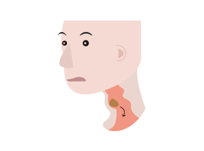

@@include('../inc/head.html')
<link rel="stylesheet" href="../css/edu_test.css">
<div class="content">
	<div class="swap">
		<p class="hd_st">나의 <i class="cblue">삼킴 장애 </i>정도는? </p>
		<div class="bx_inner">    
			<P class="fs13 ">
				최근 사레가 자주 들리거나 음식물을 삼키기 어려운 증상이 있다면, 프로그램을 통해 삼킴 장애 자가 평가를 해보세요.
			</p>   
		</div>
		<div class="a3">
			
		</div>
		<p class="btn-wrap">  
			<a href="check06.html" class="btn1">시작하기</a>
		</p>
	</div>
</div>
</body>
</html>